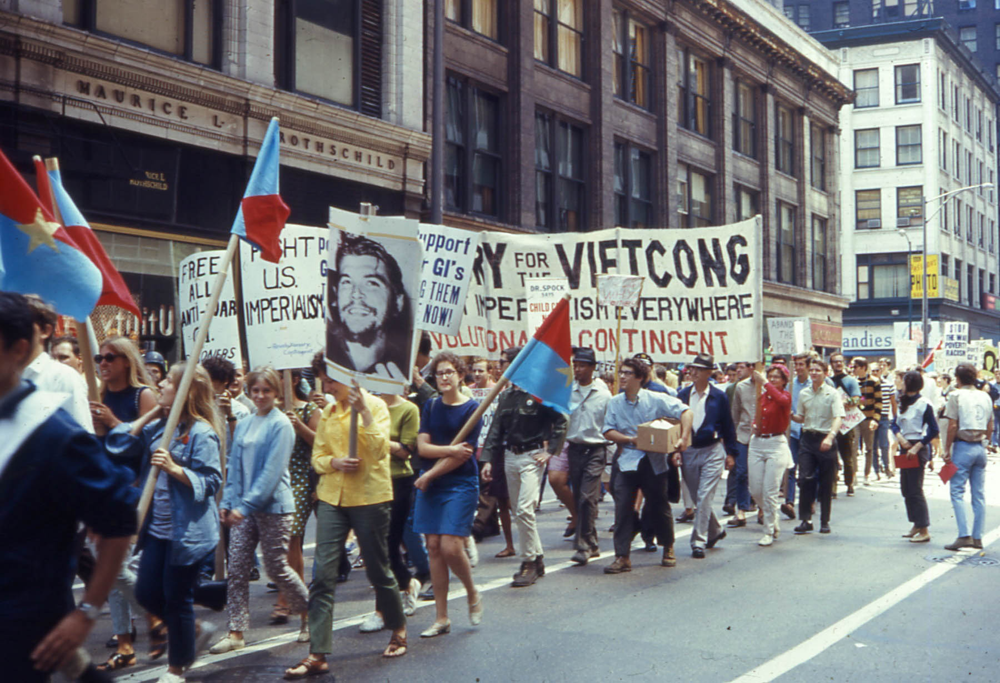
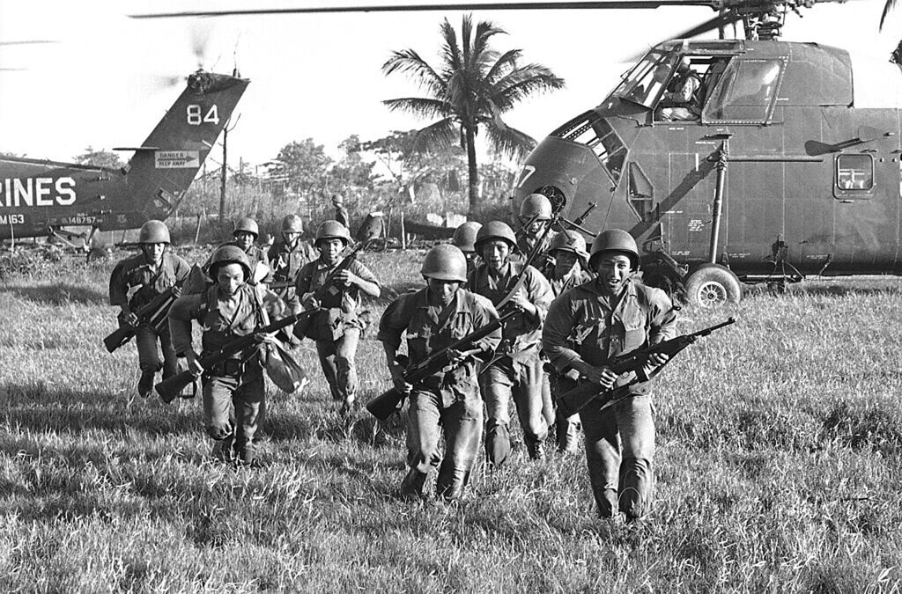
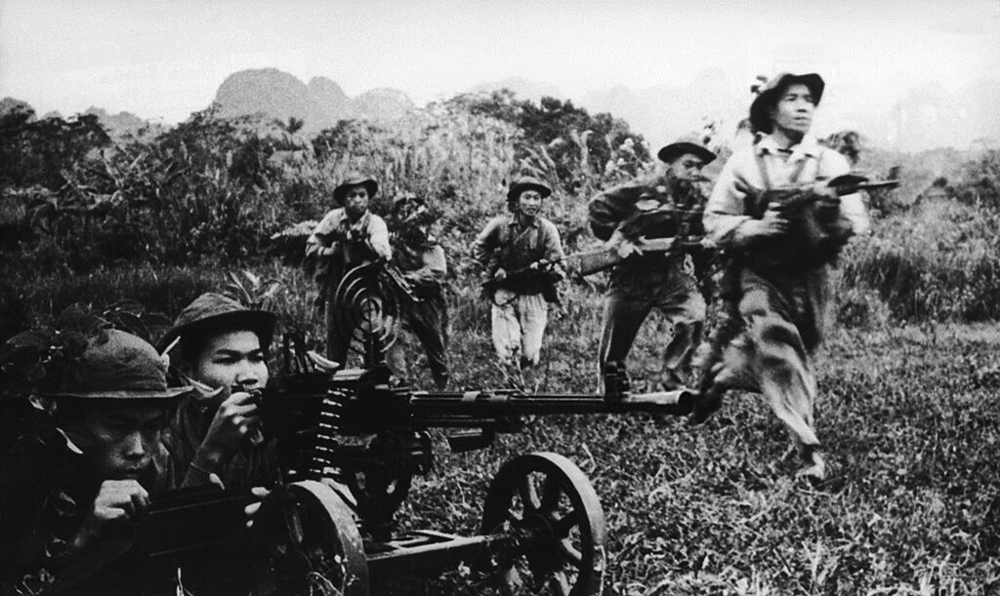

Il Vietnam a suon di canzoni
La guerra in Vietnam (1955-1975) fu uno dei conflitti cruciali della Guerra fredda. Essa vide contrapposti il Vietnam del Sud monarchico (supportato dagli USA) contro il Vietnam del Nord comunista (supportato dall’URSS), vinsero quest'ultimi. Le cause che portarono alla sconfitta americana furono molteplici, ma sicuramente legate a un sempre più crescente sentimento pacifista nell'Occidente. Un ruolo molto importante in questo contesto lo ebbe la musica, di cui adesso andremo a trattare
Gli anni Sessanta furono un decennio di grandi rivoluzioni sociali e culturali, la cultura hippy si sviluppò in quel periodo e i giovani erano desiderosi di cambiamento. L’acme di questi movimenti fu il 1968, in cui gruppi eterogenei di persone in vari paesi del mondo protestarono contro i sistemi di potere dell'epoca. Due grandi temi erano il pacifismo e l’opposizione alla guerra in Vietnam, la musica era un modo perfetto per esprimerli. Difatti, le canzoni contro la guerra prodotte in questi anni sono innumerevoli.
Innanzitutto, abbiamo Fortunate Son, quasi “colonna sonora” del conflitto vietnamita – anche se non ha riferimenti espliciti – è stata pubblicata nel dicembre 1969 dalla band Cleerence Clearwater Revival. Il brano parla, qualcuno potrebbe dire quasi in modo arrabbiato, della disparità di trattamento tra le famiglie ricche e quelle povere, nel senso che i figli “fortunati” delle prime sono in grado di scansarsi l’arruolamento. Ecco quindi spiegato perché, durante i ritornelli, si fa riferimento al fatto di non essere figlio né di un senatore - "I ain't no senator's son" , né di un milionario - "I ain't no millionaire's son" e né di un militare - "I ain't no military son" .
Altro celeberrimo brano è War Pigs, pubblicato nel settembre 1970 nell’altrettanto famoso album Paranoid della band Black Sabbath. Canzone anti-guerra, in particolare quella del Vietnam, parla dei politici che mandano a morire nelle loro guerre persone comuni anziché loro stessi: “Why should they go out to fight? They leave that role to the poor”. Il pezzo contiene qualche riferimento al demonio e pratiche legate ad esso, ma solo per equiparare la guerra al male assoluto. Non a caso il bassista e paroliere della band ha affermato: “La guerra è il vero Satanismo”.
Ulteriore canzone contro il conflitto in Vietnam, cosa che forse non tutti sanno, è Born in the USA di Bruce Springsteen. Il brano, pubblicato nel 1984, è dai più identificato come una semplice canzone patriottica americana, tanto da voler essere usata dal presidente Ronald Reagan in una campagna elettorale, cosa che Springsteen impedì. In realtà, il pezzo parla del rientro negli USA di un veterano di guerra e del trattamento disumano a cui è sottoposto dopo tutto quello che ha passato. In particolare, fa molto effetto la sua impossibilità di trovare lavoro una volta tornato, ciò è dovuto allo stigma nei confronti dei soldati ritornati in patria (spesso etichettati come alcolisti, drogati e devastati dal conflitto). Si fa inoltre leva sulla futilità della guerra in sé, come ad esempio nei versi: “I had a brother at Khe Sanh fighting off the Viet Cong. They’re still there, he’s all gone”. Il cantante fa riferimento al fatto che i Viet Cong sono ancora lì, mentre l’amico di questo veterano è invece morto.
Infine, per dimostrare come non fosse un fenomeno solo americano, un ultimo brano contro la guerra in Vietnam è C’era un ragazzo che come amava i Beatles e i Rolling Stones di Gianni Morandi. Pubblicato nel 1966, esso rappresenta quasi un unicum nel repertorio musicale del cantante, in quanto suo raro esempio di canzone impegnata politicamente (a tal punto da ricevere censura dalla RAI). Il testo fa esplicito riferimento al Vietnam e parla di un ragazzo americano che si sta costruendo la propria vita in Europa, ma tutto ciò viene stroncato dall’arruolamento nell’esercito – “Ma ricevette una lettera. La sua chitarra mi regalò. Fu richiamato in America”. Oltre all’iconico “tatata” del ritornello, chiaro riferimento al rumore delle mitragliatrici, sono molto significativi gli ultimi due versi, i quali recitano: “Nel petto il cuore più non ha, ma due medaglie o tre”.
Le innumerevoli dimostrazioni di dissenso contro il conflitto in Vietnam sono state il chiaro segnale della voglia di pace delle nuove generazioni. Questa volontà ha spinto, in una certa misura, alla conclusione delle ostilità. La condanna unanime che traspare da queste canzoni dona sicuramente all’ascoltatore moderno i sentimenti dei giovani di allora, che hanno provato a plasmare il mondo coi vari mezzi a loro disposizione.